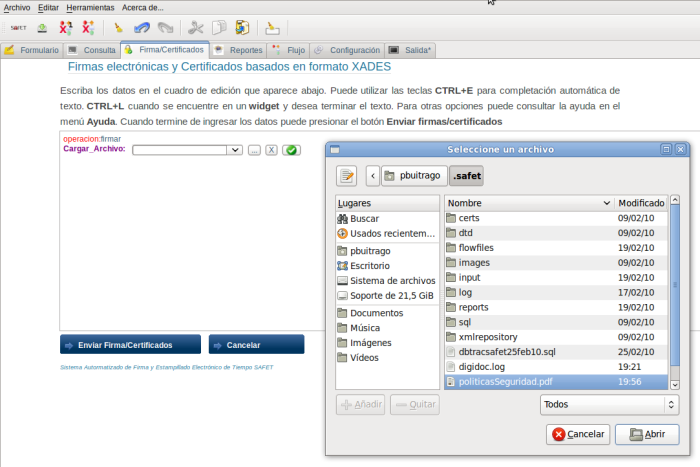
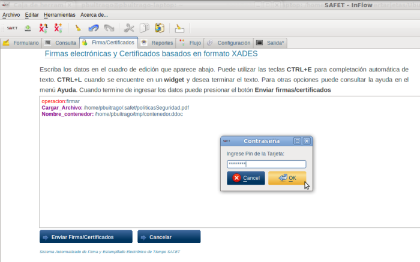
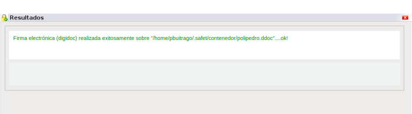

cargar_Archivo* menú inteligente, y debe aparecer en el cuadro de edición la linea de texto Cargar_archivo: junto con un botón de selección donde se debe marcar el documento digital que se le aplicara la firma. Si el documento de flujo de trabajo no esta agregado en el archivo safet.conf lo puedes seleccionar haciendo click al botón se despliega una ventana donde debe seleccionar el documento a firmar (ver figura S3.3.1-3)

figura S3.3.1-3. Seleccionar el documento para aplicar la firma electrónica
luego debe seleccionar o crear un contenedor donde se almacena el documento firmado, para la misma debe hacer click sobre el campo 
Nombre_contenedor del menú inteligente, debe aparecer en el cuadro de edición la linea de texto Nombre_contenedor junto con un botón de selección donde debe marcar el contenedor. Si el contenedor no existe, debe crearlo haciendo click sobre el botón. Debe seleccionar el directorio y el nombre del archivo donde se va a guardar ver (figura S3.3.1-4)

Figura S3.3.1-4. Crear contenedor
luego se procede a enviar, haciendo click en el botón Enviar Firma/Certificados, el sistema solicitara que ingrese el pin de la tarjeta inteligente. (ver figura S3.3.1-5)

Figura S3.3.1-5. Ingresar el pin de la tarjeta inteligente.
Si todo el proceso sale bien se muestra en un cuadro de información que aparece en la parte inferior derecha si la operación fue exitosa (ver figura S3.3.1-6) y muestra información sobre la operación como:

Figura S3.3.1-6. Mensaje, Resultado de la operación